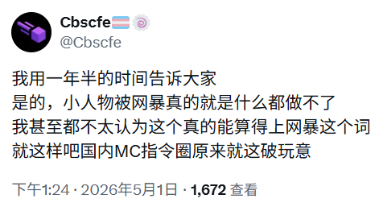
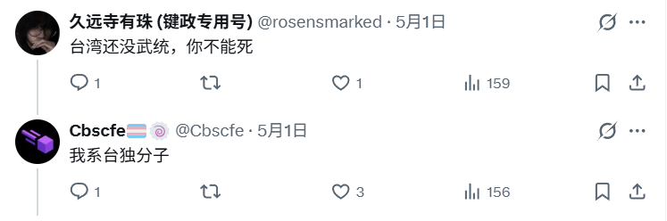

櫻川由奈🏳️⚧️Sakura🍥
@Xiaoyi_0324
@dalao_mengcha 我是真想看你的视频


大佬萌茶
@dalao_mengcha
属实不能忍，经典润人思维，明明自己在国内指令圈干了烂屁眼子的事情，然后跑到外网找说法，找外网不清楚事件的人博取同情，你自己精神不稳定就算了，还到处跳脚，还有些人到处扩列互关，你看你互关了什么牛鬼蛇神。
想在外网获得新的身份和认同，就别nm把网内的人和事情带进去，吸毒和台湾问题是底线 https://t.co/XZduXbVoNa